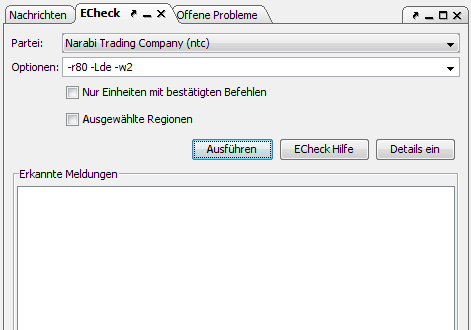

Hier kann man E-Check, den Eressea-Befehlschecker aufrufen. E-Check kann man unter http://echeck.faroul.de/ downloaden. Eine Anleitung findet sich ebenfalls dort.
Bei Klick auf den Menüpunkt erscheint folgender Dialog:

Oben kann man den Pfad zu E-Check angeben. Zusätzliche Optionen können direkt übergeben werden. Die Liste der möglichen Optionen findet man in der Dokumentation zu E-Check.
Mit Klick auf Ausführen werden die Befehle durch E-Check geprüft. Die Fehler und Warnungen, die E-Check ausgibt, werden im linken Fenster aufgelistet. Mit Klick auf einen Fehler bzw. eine Warnung springt das Hauptfenster zu der entsprechenden Einheit und man kann die Befehle nochmals überprüfen.